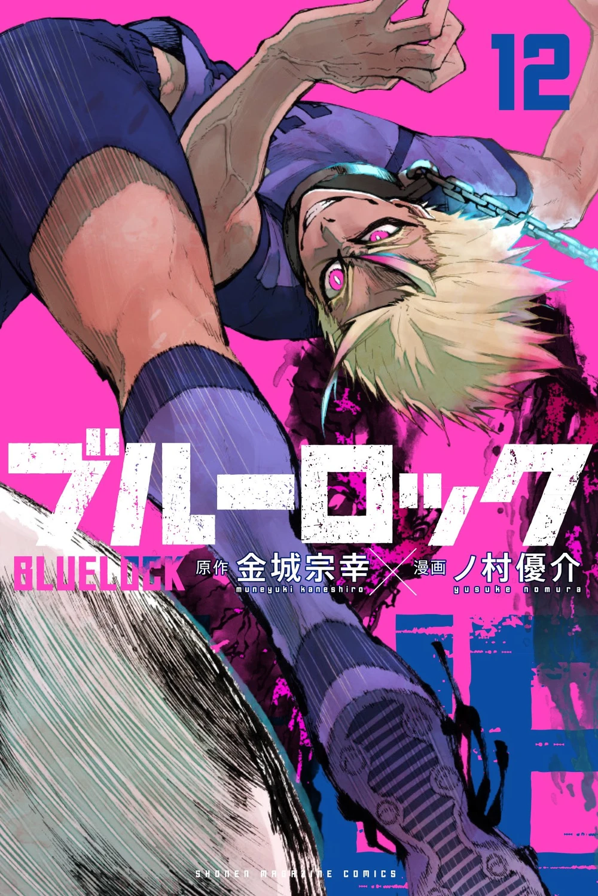
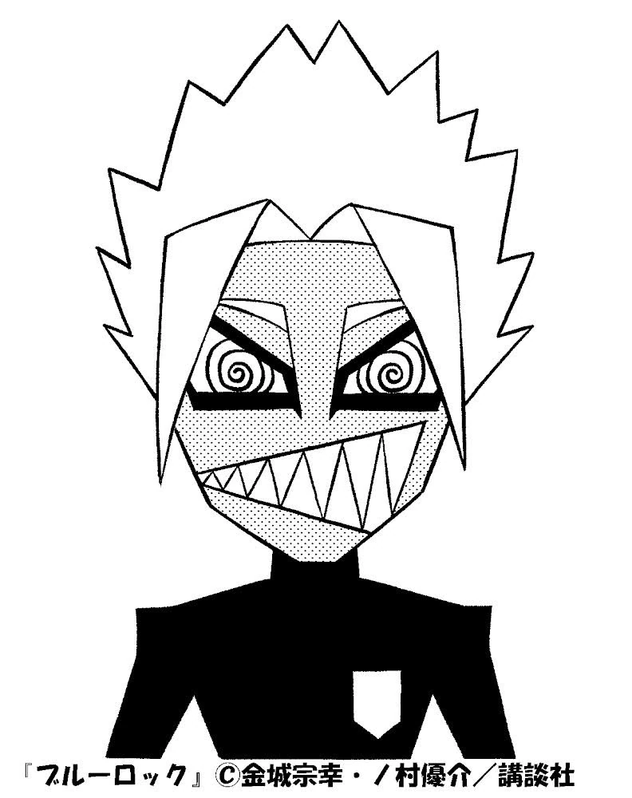
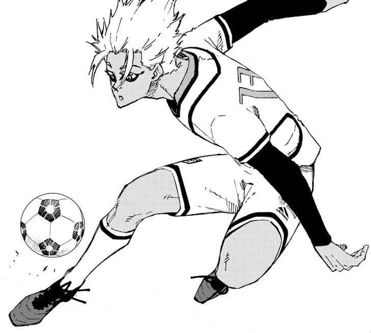
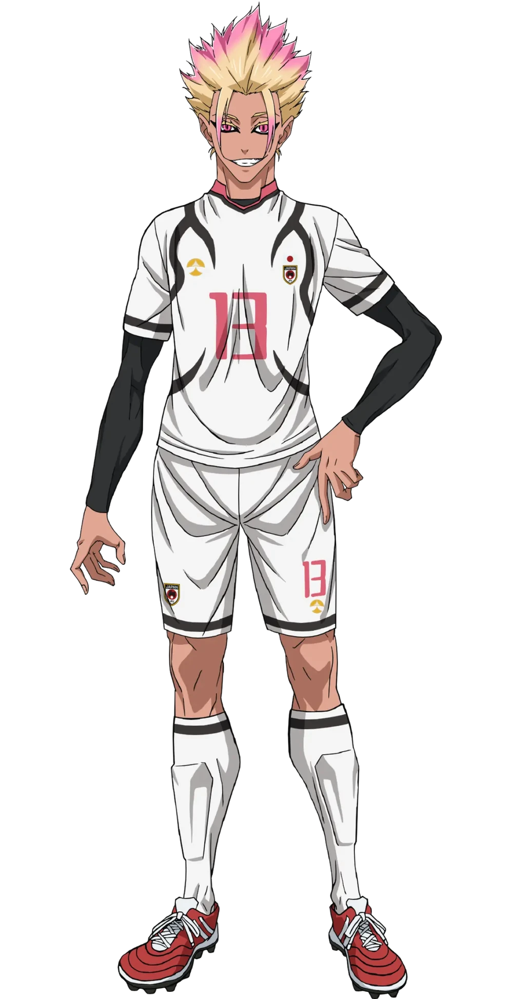

Japanese: 士道 龍聖
Rōmaji: Shidō Ryūsei
Alias(es) "Demon"
Age: 18
Birthday: July 7
Height: 185cm / 6"1
Hair color: Blonde with Pink Tips
Eye color: Pink
Team: Paris X Gen (France)
Jersey Numbers: 13 (Japan U-20) / 99 (PXG)
Position(s): Striker
Shido is a tall, tanned young man with spiky blond hair with fading pink at the tips, having two strands falling on both sides of his face. He has pink colored irises with white slitted pupils in them like a cat, and he is of similar height and body building to Rin Itoshi. He is very expressive and is often seen with a joker-like grin or smirk.
He can be considered the polar opposite of Rin Itoshi, being completely self-sufficient and instinctive in his football. A noticeable trait of Shido's has been his propensity for violence to get what he wants, often being unwilling to work with most people (if anybody at all). He seems completely aware and content with the toxicity of his behavior and only feels slight remorse once he is electrocuted and locked up for being overly aggressive and threatening serious bodily injury to others.
Shido is an eccentric player in Blue Lock who has a strong penchant for violence or, more specifically, physical altercations. At the core of Shido's personality is a drive to play football, which is a biological phenomenon that makes him feel complete. Shido scores goals to pass on his genes and leave his mark on the world; it is his sole focus. He gets excited from playing high-level football with other high-level players and is bored if people cannot make him "explode" or don't "explode" themselves.
He seems to get over such feelings when Sae Itoshi releases him from his behavioral captivity, who asks him to join him in playing high-level football and is cleared to act however he wants as long as it's for Sae's sake. When released from Blue Lock under Sae's supervision, he seems to be even more openly violent and causes frequent quarrels with the Japan U-20 team's ace player Shuto Sendo, who initially doesn't respect Sae.
Shido can be openly friendly and even affectionate towards others, such as Sae Itoshi, who gave him the opportunity to play with him and evolved his level of play in the process, showing him a type of football he has never experienced before. Shido can also be overtly and unnecessarily sexual at times, and though he is prone to violence, he also learns how to control his violent rampages in exchange for playing high-level football longer. Shido is able and willing to acknowledge other people's skills, praising Isagi for making the "best play" of the first game of the Third Selection (when Rin wouldn't) despite Isagi stealing a goal from him. By the time of the Neo-Egoist League, Shido is able to control his anger and violence enough to share the field with his most hated rival, Rin Itoshi.